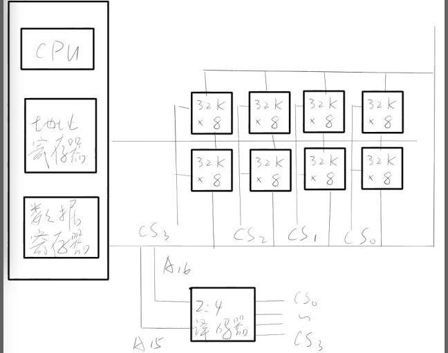
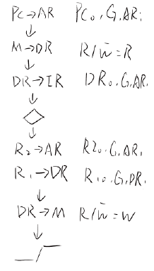
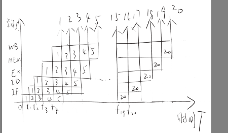
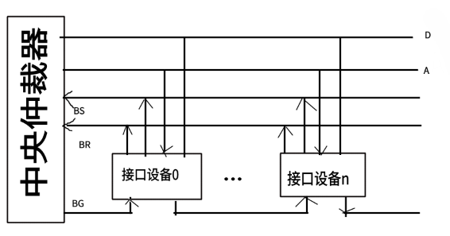
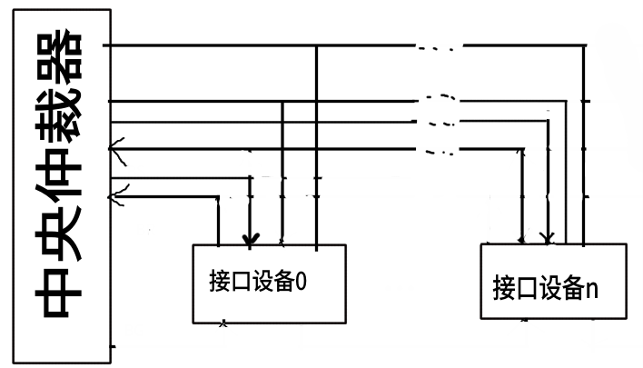

1 第一章
1.1 习题
- 什么是存储容量? 什么是单元地址? 什么是数据字? 什么是指令字?
- 存储容量: 存储器所有存储单元的总数
- 单元地址: 每个存储单元的编号
- 数据字: 如果某字代表要处理的数据
- 指令字: 如果某字为一条指令
- 指令和数据均存放在内存中, 计算机是如何区分它们是指令还是数据?
通过不同类型的周期区分:
- 取指周期: 从内存读出的信息流是指令流
- 执行周期: 从内存读出的信息流是数据流
为什么软件能够转化为硬件, 硬件能够转化为软件? 实现这种转化的媒介是什么?
任何操作可以由软件来实现, 也可以由硬件来实现; 任何指令的执行可以由硬件完成, 也可以由软件来完成
实现这种转化的媒介是软件与硬件的逻辑等价性
- CPU 的性能指标有那些? 其概念是什么
- 吞吐量: 表征一台计算机在某一时间间隔内能够处理的信息量
- 响应时间: 表征从输入有效到系统产生响应之间的时间度量
- 利用率: 在给定的时间间隔内系统被实际使用的时间所占的比率
- 处理机字长: 指处理机运算器中一次能够完成二进制数运算的位数
- 总线宽度: 一般指 CPU 中运算器与存储器之间进行互连的内部总线二进制位数
- 存储器容量: 存储器中所有存储单元的总数
- 存储器带宽: 单位时间内从存储器读出的二进制数信息量
- 主频/时钟周期: CPU 的工作节拍受主时钟控制, 主时钟不断产生固定频率的时钟
- CPU 执行时间: 表示 CPU 执行一般程序所占用的 CPU 时间
- CPI: 表示每条指令周期数
- MIPS: Million Instructions Per Second
- FLOPS: Floating-point Operations Per Second
2 第二章
2.1 习题
- 有一个字长为 32 位的浮点数, 符号位 1 位; 阶码 8 位, 用移码表示; 尾数 23 位, 用补码表示; 基数为 2。请写出:
- 最大数的二进制表示: 1 11111111 01111111111111111111111
- 最小数的二进制表示: 1 11111111 10000000000000000000000
- 规格化数所能表示的数的范围:
- 已知 x 和 y, 用变形补码计算 x+y, 同时指出结果是否溢出
x=11011, y=00011
x(补)=00 11011, y(补)=00 00011 00 11011 +00 00011 --------- 00 11110 结果没有溢出, x+y=11110
x=11011, y=-10101
x(补)=00 11011, y(补)=11 01011 00 11011 +11 01011 --------- 00 00110 结果没有溢出, x+y=00110
x=-10110, y=-00001
x(补)=11 01010, y(补)=11 111111 00 01010 +00 11111 --------- 11 01001 结果没有溢出, x+y=-10111
- 已知 x 和 y, 用变形补码计算 x-y, 同时指出结果是否溢出
x=11011, y=-11111
x(补)=00 11011, -y(补)=00 11111 00 11011 +00 11111 --------- 01 11010 结果有正溢出, x-y=11010
x=10111, y=11011
x(补)=00 10111, -y(补)=11 00101 00 10111 +11 00101 --------- 11 11100 结果没有溢出, x-y=00100
x=11011, y=-10011
x(补)=00 11011, -y(补)=00 10011 00 11011 +00 10011 --------- 01 01110 结果有正溢出, x-y=10010
- 用 IEEE 32 位浮点格式表示如下的数
- -5: 1 10000001 01000000000000000000000
- -1.5: 1 01111111 10000000000000000000000
- 384: 0 10000111 10000000000000000000000
- 1/16: 0 01111011 00000000000000000000000
- -1/32: 0 01111010 00000000000000000000000
- 下列各数使用了 IEEE 32 位浮点格式, 相等的十进制是什么?
- 1 10000011 110 0000 0000 0000 0000 0000: -28
- 0 01111110 101 0000 0000 0000 0000 0000: 0.8125
3 第三章
- 设一个具有 20 位地址和 32 位字长的存储器, 问:
该存储器能存储多少个字节的信息?
\(2^{20}\times\frac{32}{8}=4M\) 字节
如果存储器由 512K x 8 位 SRAM 芯片组成, 需要多少片?
\(\frac{1024K\times{32}}{512K\times{8}}=2\times{4}=8\) 片
需要多少位地址作芯片选择?
1 位地址作芯片选择
- 已知某 64 位机主存采用半导体存储器, 其地址码为 26 位, 若使用 4M x 8 位的 DRAM 芯片组成该机所允许的最大主存空间, 并选用内存条结构形式, 问:
若每个内存条为 16M x 64 位, 共需几个内存条?
\(\frac{2^{26}}{2^{24}}=4\) 块
每个内存条内共有多少 DRAM 芯片?
\(\frac{2^{24}}{2^{22}}\times{\frac{64}{8}}=32\) 片
内存共需多少 DRAM 芯片? CPU 如何选择各内存条?
主存共需要 DRAM 芯片为: \(4\times{32}=128\) 片 A23-A0 完成内存条內存储单元寻址, A25-A24 通过 2:4 译码器进行片选
- 用 32K x 8 的 E2PROM 芯片组成 128K x 16 位的只读存储器, 试问:
- 数据寄存器多少位? 16 位
- 地址寄存器多少位? 系统地址 \(128K=2^{17}\), 所以地址寄存器 17 位
- 共需多少个 E2PROM 芯片? 8 片
- 画出此存储器组成框图。 
设存储器容量为 64M, 字长为 64 位, 模块数 m=8, 分别用顺序和交叉方式进行组织。存储周期 T=100ns, 数据总线宽度位 64 位, 总线传送周期 \(\tau=50ns\) 。求: 顺序存储器和交叉存储器的带宽是多少?
信息总量: \(q=64\times{8}=512\) 位
顺序存储器和交叉存储器连续读出 8 个字所需的时间分别是:
\begin{align} t_{1}&=mT=8\times{100ns}=8\times{10^{-7}}s\\ t_{2}&=T+(m-1)\tau=100ns+7\times{50ns}-450ns=4.5*10^{-7}ns \end{align}顺序存储器和交叉存储器的带宽分别为:
\begin{align} W_{1}=\frac{q}{t_{1}}=\frac{512}{8\times{10^{-7}}}=64\times{10^{7}}\\ W_{2}=\frac{q}{t_{2}}=\frac{512}{4.5\times{10^{-7}}}=113.8\times{10^{7}} \end{align}CPU 执行一段程序时, cache 完成存取的次数为 2420 次, 主存完成存取的次数为 80 次, 已知 cache 存储周期位 40ns, 主存存储周期为 240ns, 求 cache/主存系统的效率和平均访问时间。
cache 的命中率:
\begin{align} H&=\frac{N_{c}}{N_{c}+N_{m}}=\frac{2420}{2420+80}=0.968\\ r&=\frac{T_{m}}{T_{c}}=\frac{240}{40}=6 \end{align}cache/主存系统效率 \(e\) 为:
\begin{equation} e=\frac{1}{r+(1-r)H}\times{100\percent}=\frac{1}{6+(1-6)\times{0.968}}\times{100\percent}=86.2\percent \end{equation}平均访问时间 \(T_{a}\) 为:
\begin{equation} T_{a}=\frac{T_{c}}{e}=\frac{40ns}{0.862ns}=46.4ns \end{equation}已知 cache 存储周期 40ns, 主存存储周期 200ns, cache/主存系统平均访问时间为 50ns, 求 cache 的命中率多少?
\begin{align} h\times{t_{c}}+(1-h)\times{t_{m}}&=t_{a}\\ h=\frac{t_{a}-t_{m}}{t_{c}-t_{m}}=\frac{50-200}{40-200}=93.75\percent \end{align}
4 第四章
- 假设某计算机指令长度位 32 位, 具有双操作数、单操作数、无操作数三类指令形式, 指令系统共有 70条指令, 请设计满足要求的指令格式。
- 双操作数指令格式: 7 12 12
- 单操作数指令格式: 7 25 -
- 无操作数指令格式: 7 - -
- 根据操作数所在位置, 指出其寻址方式:
- 操作数在寄存器中, 为 寄存器 寻址方式。
- 操作数地址在寄存器, 为 寄存器间接 寻址方式。
- 操作数在指令中, 为 立即 寻址方式。
- 操作数地址(主存)在指令中, 为 直接 寻址方式。
- 操作数地址, 为某一寄存器内容与位移量之和, 可以是 相对、基址、变址 寻址方式。
5 第五章
- 参见图 5.1 的数据通路, 画出存数指令 "
STO R1, (R2)" 的指令周期流程图, 其含义是将寄存器 \(R_{1}\) 的内容传送至 \((R_{2})\) 为地址的数存单元中。标出各微操作信号序列。  - 今有 4 级流水线, 分别完成取指、指令译码并取数、运算、送结果四步操作, 令假设完成各步操作的时间依次为 100ms, 100ns, 80ns, 50ns。请问:
- 流水线的操作周期应设计为多少? \[\tau=max\{\tau_{i}\}=100ns\]
若相邻两条指令发生数据相关, 硬件上不采取措施, 那么第 2 条指令要推迟多少时间进行?
至少延迟 2 个时钟周期
如果在硬件设计上加以改进, 至少需推迟多少时间?
采用专用通路技术, 就可使流水线不发生停顿
- 指令流水线有取值(IF)、译码(ID)、执行(EX)、访存(MEM)、写回寄存器堆(WB)五个过程段, 共有 20 条指令连续输入此流水线。
- 画出流水处理的时空图, 假设时钟周期为100ns。 
- 求流水线的实际吞吐率(单位时间里执行完毕的指令数)。 \[H=\frac{n}{(K+n-1)\tau}=\frac{20}{(5+20-1)*100*10^{-9}}=8.33*10^{6}\]
- 求流水线的加速比 \[S=\frac{T_{S}}{T_{P}}=\frac{n\tau K}{(K+n-1)\tau}=\frac{20*5}{20+5-1}=4.17\]
- 判断以下三组指令中各存在那种类型的数据相关。
写后读
RAWI1 LDA R1, A ; M(A)->R1, M(A) 是存储器单元 I2 ADD R2, R1 ; (R2)+(R1)->R2
读后写
WARI3 ADD R3, R4 ; (R3)+(R4)->R3 I4 MUL R4, R5 ; (R4)x(R5)->R4
写后写
WAWI5 LDA R6, B ; M(B)->R6, M(B) 是存储器单元 I6 MUL R6, R7 ; (R6)x(R7)->R6
6 第六章
- 说明总线结构对计算机性能的影响
- 简化了硬件设计
- 简化了系统结构
- 系统扩展性好
- 系统更新性能好
- 画出菊花链方式的优先级判决逻辑电路图 
- 画出独立请求方式的优先级判决逻辑电路图 
- PCI 总线中三种桥的名称是什么? 它们的功能是什么?
- 名称: HOST 桥、PCI/LAGACY 总线桥、PCI/PCI 桥
- 功能:
- 它连接两条总线, 使彼此间相互通信。
- 桥是一个总线转换部件, 可以把一条总线的地址空间映射到另一条总线的地址空间上, 从而使系统中任意一个总线主设备都能看到同样的一份地址表。
- 桥可以实现总线间的猝发式传送, 可使所有的存取都按 CPU 的需要出现在总线上。
- 比较 PCI 总线和 InfiniBand 标准的性能特点 分布式仲裁不需要中央仲裁器, 每个潜在的主方功能模块都有自己的仲裁号和仲裁器。当它们有总线请求时, 把它们唯一的仲裁号发送到共享的仲裁总线上, 每个仲裁器将仲裁总线上得到的号与自己的号进行比较。如果仲裁总线上的号大, 则它的总线请求不予响应, 并撤消它的仲裁号。最后, 获胜者的仲裁号保留在仲裁总线上, 分布式仲裁是以优先级仲裁策略为基础。
7 第七章
- 一光栅扫描图形显示器, 每帧有 1024x1024 像素, 可以显示 256 种颜色, 问刷新存储器容量至少需要多少? \[\frac{1024\times1024\times256}{8\times8}=1MB\]
- 一个双面 CD-ROM 光盘, 每面有 100 道, 每道 9 个扇区, 每个扇区存储 512B, 请求出光盘格式化容量? 格式化容量=扇区容量x每道扇区数x磁道总数 \[512\times9\times100\times2=921600B\]
- 已知某磁盘存储器转速为 2400 转/分, 每个记录面道数为 200 道, 平均找道时间为 60ms, 每道存储容量为 96kb, 求磁盘的存储时间与数据传输率。 存取时间=平均查找时间+平均等待时间 \[60+\frac{1}{2}\times\frac{60}{2400}\times1000=72.5ms\] \[Dr=96\times\frac{2400}{60}=480KB/s\]
- 刷新存储器的重要性能指标是它的带宽。若显示工作方式采用分辨率为 1024x768, 颜色深度为 24 位, 帧频(刷新速率)为 72 Hz, 求:
- 刷新存储器的存储容量是多少? \[1024\times768\times3=2.25MB\]
- 刷新存储器的带宽是多少? \[1024\times768\times3B\times72/s=162MB/s\]
8 第八章
在图 8.9 中当 CPU 对设备 B 的中断请求进行服务, 如设备 A 提出请求, CPU 能够响应吗? 为什么? 如果设备 B 一提出请求总能立即得到服务, 问怎么调整才能满足此要求?
能响应, 因为设备 A 的优先级比设备 B 高。若要设备 B 总能立即得到服务, 可将设备 B 从第二级取出来, 单独放在第三级上, 使第三级的优先级最高,即令 \(IM_{3}=0\) 。
在图 8.9 中, 假定 CPU 取指并执行一条指令的时间为 \(t_{1}\), 保护现场需 \(t_{2}\), 恢复现场需 \(t_{3}\), 中断周期需 \(t_{4}\), 每个设备的设备服务时间为 \(t_{A},t_{B},\cdots,t_{G}\) 。试计算只有设备 A, D, G 时的系统中断饱和时间。
依次处理设备 A, D, G 的时间 \(T\) 为:
\begin{align} T_{1}&=t_{1}+t_{2}+t_{3}+t_{4}+t_{A}\\ T_{2}&=t_{1}+t_{2}+t_{3}+t_{4}+t_{D}\\ T_{3}&=t_{1}+t_{2}+t_{3}+t_{4}+t_{G}\\ T&=T_{1}+T_{2}+T_{3}=3*(t_{1}+t_{2}+t_{3}+t_{4})+t_{A}+t_{D}+t_{G} \end{align}- 用多路 DMA 控制器控制光盘、软盘、打印机三个设备同时工作。光盘以 \(20\mu s\) 的间隔向控制器发 DMA 请求, 软盘以 \(90\mu s\) 的间隔向控制器发 DMA 请求, 打印机以 \(180\mu s\) 的间隔向控制器发 DMA 请求, 请画出多路 DMA 控制器的工作时空图。
9 review
- 数的真值变成机器码可采用
原码, 补码, 反码, 移码表示法。 - 移码表示法主要用于表示
浮点数的阶码 E, 以利于比较两个指数的大小和对阶操作。 - 一个定点数由
符号位和数值域两部分组成。根据小数点位置不同, 定点数有纯小数和纯整数两种表示方式。 - 为了实现运算器的
高速性, 采用了先行进位、阵列乘除法等并行技术。 - 计算机对存储器的要求是
容量大、速度快、成本低为了解决这方面的矛盾, 计算机采用多级存储体系结构。 - 双端口存储器和多模块交叉存储器属于
并行存储器结构。前者采用空间并行技术, 后者采用时间并行技术。 - 指令格式中, 地址码字段是通过
寻址方式来体现的, 因为通过某种方式的变换, 可以给出操作数有效地址。 - 形成指令地址的方式, 称为
指令寻址有顺序寻址和跳跃寻址。 - CPU 从
存储器取出一条指令并执行这条指令的时间和称为指令周期。由于各种指令的操作功能不同, 各种指令的指令周期是不相同的。 - CPU 周期也称为
机器周期。一个 CPU周期包含若干个时钟周期。任何一条指令的指令周期至少需要2 个CPU 周期。 - 硬布线控制器的基本思想是: 某个微操作控制信号是
指令操作码移码输出,时序信号和状态条件信号的逻辑函数。 - 微程序设计是利用
软件方法设计操作控制的一门技术。具有规整型、可维护性、灵活性等一系列优点。 - 在计算机系统中, 多个系统部件之间信息传送的公共通路称为
总线。就其所传送信息的性质而言, 在公共通路上传送的信息包括数据、地址、控制信息。 - 为了解决多个
主设备同时竞争总线,控制权必须具有总线仲裁部件。 - 并行处理技术已经成为计算家发展的主流。它可贯穿与信息加工的各个步骤和阶段概括起来，主要有三种形式
时间并行、空间并行、时间+空间并行。 - 中断处理需要有中断
优先级仲裁, 中断向量产生, 中断控制逻辑等硬件支持。 - 定点运算器的结构主要有:
单总线、双总线、三总线运算器。 - CPU 的控制器可以根据指令的
操作性质和寻址方式形成操作数的地址。 - 指令流向的控制即
下条指令地址的形成控制。 - 硬布线控制器, 它是采用
时序逻辑技术来实现的。 - 微程序控制器是采用
存储逻辑来实现的 - 衡量总线性能的重要指标是
总线带宽, 它定义为总线本身所能达到的最高传输速率。PCI 总线的带宽可达264MB/s
名词解释:
- 指令流: 取指周期从内存读出的信息流
- 数据流: 执行周期从内存读出的信息流
- 机器数: 数在计算机中表示形式
- 定点数: 小数点位置固定不变的机器数
- 浮点数: 数范围和精度分开表示的数
- 符号数据: 非数字符号的表示
- 数值数据: 数字数据的表示
- 机器字长: 计算机能够直接处理的二进制数据的位数
- 存储容量: 存储器能够容纳的存储单元数
- 分布式软件系统: 通过网络互联的多处理器体系结构上执行任务的系统
- 指令周期: 取值、分析、执行该指令花费的总时间
- 存取时间: 启动存储器到完成该操作所花费的时间
- 存储周期: 连续两次启动同一存储器操作需要的最小时间间隔
- 存储器带宽: 单位时间内存储器存取信息的最大信息量
- 单元地址: 存储单元的唯一地址编号
- 数据字: 要处理的数据
- 指令字: 指令或指令的一部分
- 向量地址: 存放中断处理程序的入口地址
- 刷新周期: 上一次存储器器刷新结束到下一次存储器刷新完成为止的时间间隔
- 字长位数扩展: 存储器地址线并联
- 字存储器扩展: 存储器数据线并联
- 地址映射: 对主存地址, 根据映像规则生成块号和候选位置
CISC: 复杂指令系统计算机RISC: 精简指令系统计算机- cache 的命中率: 设在一段程序执行期间, cache 完成存取次数为 \(N_{c}\), 主存完成存取次数为 \(N_{m}\), \(h\) 定义为命中率, 则有: \(h=\frac{N_{c}}{N_{c}+N_{m}}\)
- 多重中断: 执行中断程序期间, 又出现新的中断请求, CPU 停止当前中断程序, 转向处理新的中断请求
- 流水线的建立时间: 流水线填满的时间
- 高速缓冲存储器: 介于 CPU 和内存之间, 速度较快、容量较小、价格较贵的存储器
- 寻址方式: CPU 根据指令中给出的地址码字段寻找相应的操作数的方式
- 微程序: 解释若干微指令的有序集合
- 微指令: 在同一 CPU 周期内并行执行的微操作控制信息, 存储在控制存储器里
- 微命令: CPU 中的控制部件向执行部件发出的各种控制命令
- 微操作: 微命令的操作过程
- 总线仲裁: 解决多个主设备申请占用总线时, 由总线控制器仲裁出优先级别最高的设备, 允许其占用总线
- 超流水线: 将多个流水线寄存器插入到流水线段中
- 总线的物理特性: 总线的物理连接方式
- 总线的功能特性: 每根总线的功能
- 总线的电气特性: 每根总线上信号的传递方向及有效电平范围
- 总线的时间特性: 每根总线在什么时间有效的规定
- 总线带宽: 总线本身所能达到的最高传输速率
- 总线占用期: 主方持续控制总线的时间
- 磁盘存储容量: 磁盘存储器所能存储的字节数
- 磁盘阵列 RAID: 多个磁盘存储器组成的大容量外存系统
- 显示分辨率: 显示器所能显示的像素数
- 图形: 没有亮暗层次变换的线条图
- 图像: 有亮暗层次的图
- 通道: 代替 CPU 管理控制外设的独立部件